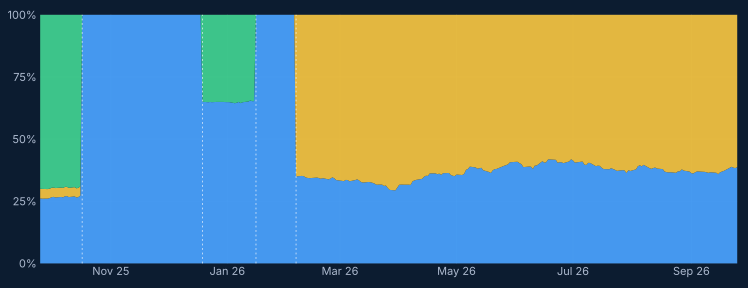
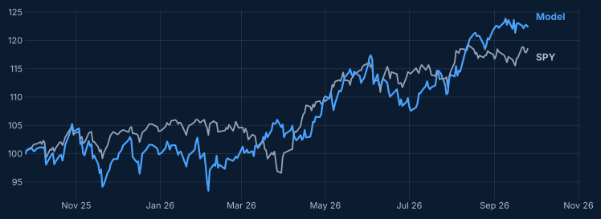

No change. The model’s own mix, Technology 45% / Energy 55%, is close to what the portfolio holds (6.3% of the portfolio apart), so the portfolio stays put. Financials and Cash remain at zero.
Performance
Model portfolio against SPY, total return, after assumed trading costs.
Where the portfolio stands
Weights at the close of each period, the week’s return of each block, and what each contributed to the portfolio.
| Block | Start of week | End of week | Week return | Contribution, pts | Model mix |
|---|---|---|---|---|---|
| Technology XLK | 37% | 39% | +3.6% | +1.35 | 45% |
| Energy XLE | 63% | 61% | −3.0% | −1.86 | 55% |
| Financials XLF | 0% | 0% | −1.5% | 0.00 | 0% |
| Cash | 0% | 0% | — | — | 0% |
The model mix is what the rule would hold today if it were rebuilt from scratch. The gap to the portfolio is too small to justify a trade.
The week
A quiet week. The worst day was Tuesday 22 September (−0.4%) and the best Wednesday 23 September (+0.4%). Technology (+3.6%) contributed +1.4 points; Energy (−3.0%), which made up 63% of the portfolio at the start of the week, contributed −1.9. Financials, not held, returned −1.5%. On the week the portfolio lagged SPY.
| Day | Portfolio | SPY |
|---|---|---|
| Mon 21 Sep | −0.4% | +1.6% |
| Tue 22 Sep | −0.4% | 0.0% |
| Wed 23 Sep | +0.4% | −0.7% |
| Thu 24 Sep | +0.1% | −0.1% |
| Fri 25 Sep | −0.2% | +0.5% |
What the model says
Every week the model reviews the past year and works out the mix it prefers. Today it points to Technology 45% / Energy 55%. That is 6.3% of the portfolio away from what is held, well short of the gap that would trigger a change, so the portfolio is left as it is. The last change was on 6 February 2026.
Twelve months of composition
The dotted lines mark the 4 changes of the past year.

| Change | Before | After |
|---|---|---|
| 17 Oct 2025 | 27 / 4 / 69 | 100 / 0 / 0 |
| 19 Dec 2025 | 100 / 0 / 0 | 65 / 0 / 35 |
| 16 Jan 2026 | 65 / 0 / 35 | 100 / 0 / 0 |
| 6 Feb 2026 | 100 / 0 / 0 | 35 / 65 / 0 |
Weights in Technology / Energy / Financials, % of the portfolio. Cash was zero throughout.
Model against SPY, twelve months

The last six weeks
Weights at the close of each week, the return of the week, and the mix the model preferred that day.
| Week ending | Portfolio | Portfolio return | SPY | Model mix |
|---|---|---|---|---|
| 21 Aug | 37 / 63 / 0 | +0.4% | −1.4% | 35 / 55 / 10 |
| 28 Aug | 37 / 63 / 0 | −0.5% | +0.5% | 35 / 55 / 10 |
| 4 Sep | 37 / 63 / 0 | +1.7% | +0.1% | 35 / 55 / 10 |
| 11 Sep | 37 / 63 / 0 | +1.1% | −0.8% | 35 / 60 / 5 |
| 18 Sep | 37 / 63 / 0 | −0.4% | −0.1% | 40 / 60 / 0 |
| 25 Sep | 39 / 61 / 0 | −0.5% | +1.3% | 45 / 55 / 0 |
Weights in Technology / Energy / Financials, % of the portfolio.
Research material only — not personalized financial advice. The model portfolio is a simulation of the rule described in Sectors Allocation, with assumed trading costs of 0.10% of each amount traded; it is not a real account. Returns use daily closes with dividends reinvested. Past performance does not predict future results. Contact: domderrico@gmail.com